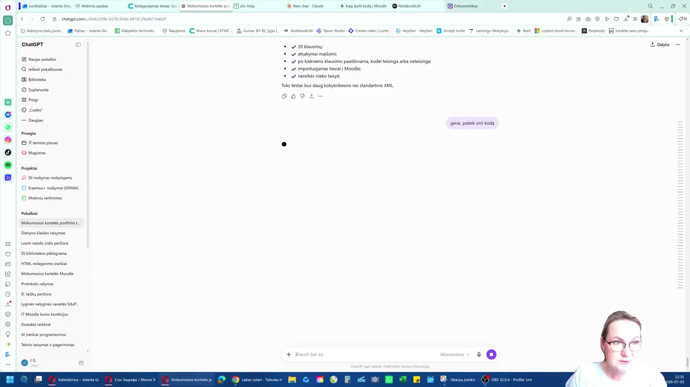

ChatGPT
Testo klausimų parengimas
Klausimus sukuria dirbtinis intelektas. Jums tereikia aiškiai juos apibūdinti.
Atlikite:
- Atsidarykite ChatGPT (arba kitą DI pokalbių įrankį).
- Aprašykite temą, klausimų skaičių ir formatą, pvz.: „sukurk Moodle testą su kelių atsakymų variantų klausimais, kuriuos galėsiu iš karto importuoti“.
- Kai klausimai paruošti, paprašykite: „gerai, pateik XML kodą“.
Ką turėtumėte matyti? ChatGPT pateikia parengtus testo klausimus pagal jūsų nurodytus reikalavimus (klausimų skaičių, sumaišytus atsakymus, paaiškinimus) ir pasiūlo Moodle XML kodą.
Svarbu
Pasirinkite „Moodle XML“ formatą. Nenurodžius šio formato, DI gali pateikti paprastą tekstą, kurio Moodle neatpažins.

🔍 PadidintiPažiūrėti, kaip tai atliekama vaizdo pamokoje
Žiūrėti visą vaizdo pamoką ↗
Atlikta. Galima tęsti